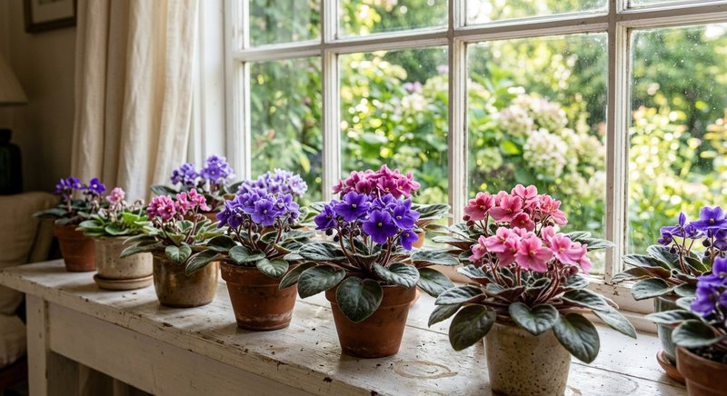

Виды растений · 5 мин чтения
Удобрение для фиалок: как подкармливать сенполию дома
Сенполия растёт в небольшом горшке, поэтому режим питания стоит подбирать внимательно. На цветение влияют не только удобрения, но и свет, температура, полив, состояние корней и размер розетки.
Материал обновлён 24.10.2026 · Справочная информация, не заменяет инструкцию на упаковке.

Когда фиалке нужна подкормка
Подкармливать имеет смысл здоровое растение, которое укоренилось и продолжает расти. После пересадки в свежий субстрат проверьте состав грунта и рекомендации его производителя: в почве уже может быть питание. Ослабленную сенполию сначала обследуют, а не «лечат» повышенной дозой.
Не существует универсального расписания для каждой фиалки. Следуйте норме удобрения и наблюдайте за растением. Если новые листья не появляются, оцените освещение и полив: дефицит света или повреждённые корни чаще не решаются добавлением подкормки.
Как внести удобрение аккуратно
Для многих цветоводов удобнее корневая подкормка: приготовьте раствор по этикетке и внесите его в грунт, не оставляя воду в поддоне. При поливе снизу следите, чтобы земляной ком не стоял в растворе дольше, чем требуется для увлажнения.
При внекорневом способе сенполии требуют особой осторожности: капли на опушённых листьях могут оставлять следы, а прямое солнце после опрыскивания нежелательно. Используйте такой способ только если он прямо разрешён производителем, и сначала испытайте раствор на небольшом участке.
Почему подкормка не гарантирует цветение
Цветение связано с количеством света, возрастом растения и сортовыми особенностями. Избыток азотного питания может стимулировать листья в ущерб компактной розетке, а избыток любого удобрения способен повредить корни. Не добавляйте повторную дозу, если фиалка не зацвела сразу.
Семяздрав в описании продавца указан для фиалок и предназначен для полива и опрыскивания. Перед применением выберите подходящий для сенполии способ по этикетке и соблюдайте указанную концентрацию.
Свет, горшок и вода: база для сенполии
Фиалка лучше реагирует на стабильный яркий рассеянный свет, чем на попытки компенсировать тёмный угол удобрением. Розетка тянется к окну, поэтому горшок время от времени поворачивают, если это не беспокоит растение. Слишком большой горшок дольше держит влажный субстрат вокруг небольшой корневой системы, а плотная мокрая смесь ухудшает доступ воздуха к корням. В результате листья могут бледнеть даже при регулярных подкормках, и простое увеличение дозы лишь добавит солей в уже неблагоприятную среду.
Для полива важна аккуратность: раствор не должен долго оставаться в центре розетки и на опушённых листьях. Если применяется нижний полив, после увлажнения кома лишнюю жидкость из поддона убирают. Периодически полезно осматривать край горшка и поверхность грунта: белый налёт, застойный запах и постоянно сырой субстрат — повод проверить режим воды, а не добавлять ещё одну подкормку. Разобраться, чем листовой способ отличается от корневого, помогает материал о корневой и внекорневой подкормке.
- розетка получает яркий рассеянный свет без жёсткого полуденного солнца;
- горшок соответствует корням, а не выбран «на вырост» с большим запасом;
- субстрат рыхлый, влажный равномерно и без застойного запаха;
- вода и раствор не остаются в центре розетки;
- после нижнего полива поддон не превращается в постоянную ванночку.
Календарь наблюдения вместо жёсткого графика
Сенполии в одной коллекции растут с разной скоростью: молодая розетка, взрослое цветущее растение и недавно переукоренённый экземпляр нельзя оценивать по одному календарю. Удобнее отмечать дату пересадки, состав субстрата, дату подкормки и появление новых листьев. Реакцию смотрят по динамике за несколько недель: компактный прирост из центра и нормальный цвет молодых листьев информативнее, чем ожидание бутонов на следующий день после полива раствором.
Если рост остановился, двигайтесь от простого к сложному: свет, влажность субстрата, температура, корни и только затем питание. Похожий порядок разобран в статье о признаках нехватки питания. При сухих краях, пятнах и резком увядании после внесения раствора не повторяйте дозу: сначала исключите перекорм и повреждение корней, опираясь на признаки из материала о перекорме удобрением. Одна понятная схема и журнал наблюдений безопаснее чередования нескольких средств «для цветения».
Отдельную отметку стоит ставить после переукоренения листа или деления розетки: молодое растение сначала наращивает корни и листья, а не обязано сразу цвести. Сравнивайте его не со взрослым экземпляром на той же полке, а с его собственным состоянием две-три недели назад. Фото розетки сверху помогает увидеть, остаётся ли центр компактным и не вытягиваются ли черешки к источнику света.
Частые вопросы
Можно ли опрыскивать листья фиалки удобрением?
Только если это разрешено инструкцией. У сенполий опушённые листья, поэтому корневой способ часто проще и аккуратнее.
Почему у фиалки много листьев, но нет цветов?
Проверьте освещение, возраст розетки, размер горшка и состояние корней. Подкормка сама по себе не гарантирует цветение.
Нужно ли фиалке только специальное удобрение?
Не обязательно, но выбранное средство должно подходить сенполиям или цветущим комнатным растениям, а дозировка — быть понятной. Универсальный концентрат применяйте только в пределах культур и норм на его этикетке.
Можно ли подкармливать уже цветущую сенполию?
Только если это допускает инструкция выбранного удобрения. Появление бутонов не является причиной делать раствор крепче или сокращать интервал между внесениями.